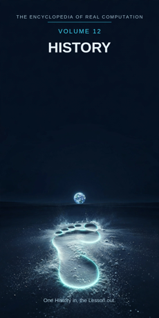

Chron.
The Encyclopedia of Real Computation

One History in, the Lesson out.
Home domain: Chronos
One History in, the Lesson out.
◉ A Principle .... History ◎ B Purpose ...... the Past ◉·◉ A.A Alpha ...... the Historian ◉·◎ A.B Cross ...... the Story △ X Primitive .... Events ⚙ Y Protocol ..... the Record ⬢ Z Product ...... the Chronicle ◐ i State ........ the Forgotten ⚖ j Condition .... the Evidence ⊞ N Set .......... the Eras ◷ h Time ......... the Century ▣ C Context ...... the Archive ▦ D Domain ....... the Timeline ♥ E Emotion ...... Nostalgia ➤ F Intention .... Preservation ↻ pi Cycle ........ the Anniversary ➔ phi Step ......... the Date ⚄ e Probability .. the Odds • h-bar Planck ..... the Artifact
Σ sigma Summation .. the Annals
◈ gamma Scale ...... the Scope Δ delta Change ..... the Revision ⁂ sigma' Options ... the Interpretations Ω Omega Answer ..... the Lesson
Every volume of this encyclopedia does the same work. The Prologue figures the subject whole. Then come twenty-four chapters, one per term, each doing four jobs in plain English: what the term means, where it sits in the computation, how it works on the volume's one running example, and what breaks without it. Then the Data, whole. Then the Crossings. Then the Sum. The running example of this volume is one single day - 20 July 1969, the day human beings first landed on the Moon - reconstructed entirely from evidence, as history reconstructs everything it honestly knows.
History: the study of the past through the records it left behind. The Past: everything that has happened - gone, but not gone without trace; the field's subject and its quarry in one.
◉ History. ◎ the Past = the root of History: aimed at itself,
history asks what actually happened. ◉·◉ the Historian: history turned on itself becomes a person who can read a record's silences. ◉·◎ the Story: history crossed with the past - the account that carries the crossing. △ Events = History parted over the Eras. ⚙ the Record = the function of the Events, the working applied. ⬢ the Chronicle = Events times the Record, the product.
◐ the Forgotten = the root of negative History: everything no
record kept. ⚖ the Evidence = the condition, element by element: history stands while its evidence holds. ⊞ the Eras = the set: Ancient, Classical, Medieval, Early Modern, Modern, Contemporary.
◷ the Century: history comes down through time. ▣ the Archive:
where history stands. ▦ the Timeline = the Eras crossed by the Study. ♥ Nostalgia = the difference a landing of the past makes.
➤ Preservation = the intention that carries a context. ↻ the
Anniversary: the past returns on schedule. ➔ the Date: one day, placed and stood on. ⚄ the Odds: the likelihood a reconstruction is right, printed beside it. • the Artifact: the least piece, one surviving thing. Σ the Annals: all of history, summed year by year. ◈ the Scope: the scale of an account. Δ the Revision: history's own measure of its change. ⁂ the Interpretations: the spread of readings a settled fact still opens. Ω the Lesson: the answer history resolves into.
IF If History to the Past, then Events & the Record is the Chronicle, or the Forgotten while the Evidence for the Eras, through the Century, in the Archive, the Timeline, Nostalgia, Preservation, at the Anniversary by the Date, with the Odds over the Artifact - sum the Annals, scale the Scope, change the Revision, options the Interpretations - therefore the Lesson.
Stands below, after the chapters, figured whole: the Eras crossed by the Study, twenty-four cells, and the six contexts.
The seven laws, run on this seed. Pythagoras: History squared plus the Past squared overlays the Archive squared - the triangle checks in the Where, the If, and the Data identically. Law of cosines: the tilt between history and its past is set by context - in the archive the angle is close and checked; in the pub it opens wide. Binomial: the middle term is the Story, two times over - the past shapes the story, and the story reshapes what of the past survives. AM-GM: the Past is the geometric mean between History and the One - the single Artifact of Chapter 19. Log law: the Scope of the Chronicle is the Scope of the Events plus the Scope of the Record - reach adds where work multiplies. Complex modulus: the Forgotten is counted in the size of the field; history is larger, not smaller, for honestly measuring what it has lost. Triangle inequality: no route from Events to Chronicle is shorter than the Record; skip it and you hold legend, labelled as such in the last term but one.
History begins with the humblest material there is - what happened, one event at a time - and works it through the record into the one product no event can make alone: a chronicle that a stranger can trust. Its honesty is printed at the front: the forgotten is named and measured, not denied; the evidence is cited, so every claim can be checked back to its source; the odds are stated beside the claims, so the certain second and the disputed syllable are never dressed alike. Its time is the century, its rhythm the anniversary, its smallest step the date, its least piece the artifact. What it resolves into is not the past itself - the past is gone - but the lesson: what a later generation, standing on records kept honestly, can learn from a day it never lived. One History in, the Lesson out.
What it means. History is the study of the past through its records: not the past itself, which is gone, but the disciplined recovery of it from what it left behind - documents, artifacts, memories, measurements. It is the only field whose entire subject no longer exists, and it works anyway.
Where it sits. History is the Principle of this volume, the seed: the Past is its root, the Historian its self-product, the Story its cross. Every other term is history read one way.
How it works. Take one day: 20 July 1969. It is not present any more; no one can visit it. Yet it is among the best-known days that ever passed, because it was recorded as it happened - filmed, transcribed, telemetered, printed. Everything in this volume is history doing to that day what it does to every day it can reach.
What breaks without it. Remove the Principle and every other field keeps its present and loses its depth: medicine forgets which cures failed, law forgets why its rules were written, and each generation starts the species' education over from the nursery.
What it means. The past is everything that has happened: the field's purpose and its quarry. It cannot be altered, repeated, or interviewed; it can only be recovered, in part, from traces. A history that stops being aimed at the actual past has become something else - propaganda, usually.
Where it sits. The Past is the Purpose, B = the square root of A: history aimed at itself extracts the demand to answer to what really occurred. And B squared = A: a stretch of past fully recovered - events, records, chronicle settled - stands as history itself.
How it works. The Moon day's past is unusually recoverable: the landing craft's descent was measured second by second, spoken aloud, and kept. Even so, the recovery is partial - two men's pulse rates are recorded; what each privately thought at the moment of touchdown is past, and past in the unrecoverable way. The Purpose names both facts honestly.
What breaks without it. History without the past as its aim is storytelling with footnotes: fluent, moving, and answerable to nothing. The aim is what lets the field be wrong - and therefore, sometimes, right.
What it means. The historian is history embodied: a person trained to read records against each other - to date a document by its paper, suspect a memoir by its interests, and hear what a chronicle is not saying. The field's standards live in such people or nowhere.
Where it sits. The Alpha, A times A: the field turned on itself. The same transcript read by a tourist and by a historian differs in the company the words keep: other missions, other sources, the known habits of the men speaking, the known failures of the microphones.
How it works. Give the landing-day transcripts to a beginner and they read a triumph. Give them to a historian and she reads a working day: the alarms that meant nothing, the fuel margin counted aloud, the sentence prepared in advance and the sentences nobody prepared. The holder is the difference.
What breaks without it. Unowned history is an attic: everything kept, nothing weighed. Records without a reader trained to distrust them politely are just old paper with authority's costume on.
What it means. The story is the interaction term: history crossed with the past, the account that makes recovered events followable by a mind. Story is not the enemy of fact in this volume; it is fact's vehicle - and like every vehicle, it can be driven off the road, which is why the field audits it.
Where it sits. The Cross, A times B, counted twice: the past shapes the story (the records permit some tellings and forbid others), and the story reshapes the past (what is retold is re-preserved; what is never retold drains into the Forgotten).
How it works. The Moon day's story - a landing, a step, a flag, a return - is so well shaped that it carried the day into every classroom on earth. It also quietly dropped a million working details. Both facts are this chapter working: the crossing carries, and the carrying selects.
What breaks without it. With either factor at zero - records with no account, or account with no records - the product is zero: archives nobody reads, or legends nobody can check. The story checked against the record is the whole craft in one line.
What it means. Events are the primitive material: one thing happening, at one time, in one place. An event makes no argument by itself; it is the clay. History parted over its eras arrives first as events - a landing, a signature, a harvest, a death.
Where it sits. X = A times N: the Principle spread across the Set. Each era receives history as its own events - the ancient era as foundations, the modern as revolutions, the contemporary as broadcasts.
How it works. The Moon day divides into events the way a rope divides into fibres: the launch days earlier, the landing in the afternoon (American time), the first step late that night, the rendezvous, the splashdown. Each is one event with a time stamp. Nothing has been interpreted yet. The inventory is this chapter.
What breaks without it. A history without events is a mood about the past: eras praised and blamed in general, nothing that happened on a date. Events are what make the field falsifiable - and therefore a field at all.
What it means. The record is what may be made of events so they survive: transcripts, telemetry, film, photographs, logbooks, front pages, letters home. The forms vary; the discipline does not - a record must be made near the event, kept identifiable, and open to other readers. That openness is the protocol.
Where it sits. Y = f(X), with f the root of the Past: the working is governed by the purpose - records are made so the past can be answered to later, not merely so the present can admire itself.
How it works. The Moon day's record is the richest ever left by one day to that date: the air-to-ground transcript, word for word; the television signal, watched live by hundreds of millions; the onboard film; the measurements streamed down and written to tape. The event ended in hours. The record is still being read.
What breaks without it. Events without a record evaporate on the schedule of memory: exact for a week, shaped for a year, gone in a generation. The record is the field's hands; without hands, the primitives are only mourned, never worked.
What it means. The chronicle is the product: events worked through the record into an ordered account - what happened, in what order, on what evidence. Chronicles are history's load- bearing walls: the settled sequence other work stands on, from textbooks to trials.
Where it sits. Z = X times Y: area-shaped, extending exactly as far as its factors reach, and factorable back for audit at any time: which events, from which records, assembled by whom.
How it works. The Moon day's chronicle can be written to the minute: touchdown with fuel counted in seconds, the hatch, the ladder, the words, the samples gathered, the ascent. Every line cites its record. That citability - not the excitement - is what makes it a chronicle rather than a ballad.
What breaks without it. Working that never sets into product is antiquarianism: boxes of transcripts no account ever gathers. The chronicle is where labour becomes inheritance - the version the next century starts from.
What it means. The forgotten is history's shadow: everything that happened and left no recoverable trace - which is to say, nearly everything. Most conversations, meals, fears, and kindnesses of every century are in this term. It is not a failure of the field; it is the field's honest measurement of its own coastline.
Where it sits. i = the root of negative A: the state of the principle itself, counted in the field's size by the modulus law. The forgotten is not outside history, mocking it; it is one of history's terms, and an account that omits it is overclaiming by exactly its size.
How it works. For the Moon day itself: the words are kept, the telemetry is kept - and the private thoughts of two men inside a thin-walled craft, the exact dreams of the hundreds of millions watching, the day as lived in places no camera reached, are forgotten, irrecoverably, in the same hours. The shadow falls across the best-lit day there has ever been.
What breaks without it. A history that hides its forgotten presents its slice as the whole loaf - and the lie is found, by the next archive opened, at the worst moment. Naming the shadow is what lets the field trust its light.
What it means. Evidence is the stated condition on which a claim about the past stands: this document, this tape, this artifact, checked in this way. History does not ask to be believed; it shows its conditions, claim by claim, so a checker can stand where the historian stood.
Where it sits. j, the Condition: the root taken element by element. Each claim stands while its evidence stands; test the evidence and the claim is re-settled on the spot - upgraded, downgraded, or withdrawn, in the open.
How it works. The day's most famous sentence is this chapter's showpiece: the recording of the first words from the surface was studied for years over one small syllable - whether the word "a" was spoken before "man." The argument was settled the only way this field settles anything: back to the evidence, with better instruments, and the answer printed with its odds.
What breaks without it. Claims without conditions are inheritances accepted on trust: fine inside a family, fatal inside a field. Printed evidence is what lets history be argued with instead of merely repeated.
What it means. The eras are history's divisions: Ancient, Classical, Medieval, Early Modern, Modern, Contemporary. Each is the whole principle read at one grain of record-keeping and one scale of life - the ancient world known by ruins and a few texts, the contemporary by a flood no archivist can finish.
Where it sits. N, the Set: the term everything is counted in. Events are A times N; the domain is N crossed by the Study; the annals sum over N. The set is complete as this volume defines it and argues about its own borders endlessly - where the medieval ends is a scholarly industry, and the argument is healthy.
How it works. The Moon day sits in the Contemporary era, close enough to its opening decades to be an early exhibit of it: a day recorded electronically, broadcast live, and archived in data. Set against an ancient king's greatest day - known from one carved list and a layer of ash - the set's whole doctrine is visible in a single comparison.
What breaks without it. Unsorted history is an undated heap: events from every century claiming equal authority and equal grain. The eras are how the field knows which kind of knowing it is doing, and what that kind can bear.
What it means. The century is history's working time-unit: long enough for a landing to become an era's emblem, short enough for one archive to hold. The field thinks in centuries the way society thinks in generations - it is the span across which consequences finish unfolding and reputations finish settling.
Where it sits. h, Time: the passage the whole figure moves through. History's cargo keeps unusually well in one way - the records do not age their contents - and unusually badly in another: every generation re-reads them with new eyes, so the past travels through time being perpetually re-arrived.
How it works. The Moon day belongs to the twentieth century, and the century carries it: the day means what it means partly because of the century around it - the wars before it, the race that funded it, the screens that carried it. Lift the day out of its century and it is a stunt; keep it in place and it is a landmark. Placement in h is interpretation itself.
What breaks without it. History without its time-sense flattens everything into a single "olden days": causes detached from effects by the small matter of three hundred years. The century is the unit that keeps consequences assigned to the right generations.
What it means. The archive is where history stands: the kept collection - mission records in national vaults, newspapers in library basements, film in cold storage - inside which the field does its work. The archive is the base context: the standing-place from which this volume's domain is read.
Where it sits. C, the Context, first of the setting terms: contexts transform the domain (the table stands in the Data), and the size of a context's difference is measured by Nostalgia, the next part's first term.
How it works. The same landing day stands in several archives and is a slightly different day in each: in the space agency's files it is engineering; in a family's attic, in a father's letters, it is the night the television stayed on past bedtime and nobody minded. The records overlap; the contexts colour. This volume reads the day from the archive, and says so.
What breaks without it. Context-free history imagines the record reads itself. It does not: who kept it, why, and what they threw away are facts about every document, and the field that ignores them is reading with one eye shut.
What it means. The timeline is history's whole territory: the eras crossed by the study - every era in its four movements, from the question it asks to the teaching it hands on. The full table stands in the Data, twenty-four cells, every one figured. A timeline is not a list; it is the land the events stand in, surveyed.
Where it sits. D = N crossed by R: the set by the study. An era becomes territory only when the study moves across it; the domain is a crossing, never a mere sequence of dates.
How it works. Pin the Moon day on the timeline and watch the territory organise around the pin: behind it, the era of rockets assembled from war; beside it, the same month's other days, most of them forgotten (Chapter 8 has their address); ahead of it, every landing and station since, standing in a row it started. One date, correctly placed, lights the whole survey.
What breaks without it. Eras without a domain are six museums in six towns, each with its own labels and no road between them. The timeline is the road system: it is what makes "before" and "after" into arguments instead of decorations.
What it means. Nostalgia is the difference the past makes when it lands in a living person: the ache and warmth of "I was there" or "it will not come again." It is this volume's emotion because it is the field's ever-present interference - a signal about the rememberer, invaluable as evidence about them, treacherous as evidence about the event.
Where it sits. E, Emotion: the difference between contexts, C1 minus C0. The day as recorded and the day as remembered differ, and the size of the difference is this term - measured, not deplored. A historian who can read nostalgia can use memoirs; one who cannot is used by them.
How it works. Ask the generation that watched the landing where they were, and the answers arrive with addresses, television sets, and parents' voices attached. The remembering is itself now part of the record - evidence about 1969's meaning and about every year since that kept re-landing the day in living rooms.
What breaks without it. A field that cannot measure its emotion will mistake its warmest sources for its truest. Nostalgia named and sized is data; nostalgia unnamed is a thumb on every scale in the building.
What it means. Preservation is history's intention: the deliberate keeping of records against time, fire, damp, and indifference. It is the most consequential act in this volume because it is upstream of everything else - the future's evidence is decided by what the present bothers to keep.
Where it sits. F, Intention: the operator that carries contexts, C1 = C0 + F. Apply preservation and the same archive becomes a restoration programme, a digitised collection, a lesson bank. What survives the carrying is the record; what is added is a future reader's chance.
How it works. The Moon day's own tapes carry this chapter's warning: some original recordings of the mission's data were later erased and reused, as tape was expensive and shelf space short; the day's television pictures survive in their finest form because other copies, kept elsewhere, were found and restored decades later. Preservation is intention, and its absence is also a decision - made by default, at the worst price.
What breaks without it. Unpreserved history is a field eating its own seed corn: every generation's historians cursing the last generation's filing. The intention named here is the difference between an archive and a landfill with dates.
What it means. The anniversary is history's cycle: the scheduled return of a date, by which the past is re-met on a period - the fiftieth, the centenary - and the field re-runs its whole figure on the same event with new evidence and new eyes. Anniversaries are when archives open boxes and nations re-argue, politely, in ceremonies.
Where it sits. pi, the Cycle: the loop the figure runs, turning by dates. The anniversary is also the field's revision schedule: each great return is expected to correct the account, not merely to repeat it - the cycle carries the settlement and re-opens it in the same motion.
How it works. The fiftieth anniversary of the landing, in 2019, ran the full cycle in public: restored footage released, old interviews re-read, the surviving participants honoured, the account measurably improved. The day had not changed in fifty years. The history of it had - which is this chapter's whole doctrine.
What breaks without it. Without the cycle, an account is written once and embalmed: the first draft of a day becomes its eternal verdict. The anniversary is how the field schedules its own humility.
What it means. The date is the smallest step of history: one day, placed exactly, that a reader can stand on. History climbs by dates the way a proof climbs by lemmas - each one small, checkable, and load-bearing for the next. A date is the difference between "long ago" and knowledge.
Where it sits. phi, the Step: the advance at the cycle's turn. In the grammar the cycle turns by the step - at the Anniversary by the Date. Too coarse - a year, a reign - and turning points blur; too fine - a claimed second no record can support - and the step is a decoration, not a step.
How it works. This whole volume stands on one date used as a single step: 20 July 1969. From that one placed day, a reader can step backward to the programme's beginnings and forward to everything it caused, sure of the footing at the start. That is all a date is, and it is enough to build a volume on.
What breaks without it. Without true steps, narrative floats: events in a plausible order, causes assigned by rhythm rather than by record. The date is how the field stays answerable one stride at a time.
What it means. The odds are the likelihood that a claim about the past is right, printed beside the claim. History's finished certainties are fewer than mathematics' and its honesty equal: the well-witnessed second, the multiply-sourced document, carry odds near the ceiling; the anecdote, the late memoir, the lost original, carry lower ones - stated.
Where it sits. e, Probability: with the Odds over the Artifact - every point of the field carries its likelihood with it. Evidence (Chapter 9) is the machine that sets this term; the Interpretations of Chapter 23 are the claims whose setting is honestly unsettled.
How it works. On the Moon day the odds are printed in layers: the minute of touchdown - certain, from telemetry and a dozen clocks; the exact wording of the first sentence - argued for decades, at odds this chapter refuses to round to one hundred; the private thoughts at touchdown - odds nil, and assigned to Chapter 8. Three claims, three settings, no costume changes.
What breaks without it. A field that will not print its odds forces its readers to treat its bedrock and its guesses as one substance - and they will eventually choose to treat all of it as guesses. The stated margin is what trust is made of.
What it means. The artifact is the least piece of history: one surviving thing - a boot print's photograph, a page of checklist, a bag of grey rock. An artifact proves almost nothing alone and anchors almost everything together: it is the past in its smallest addressable form, the point where "they say" becomes "here it is."
Where it sits. h-bar, the Planck term: the smallest resolution of the figure. The Annals of Chapter 20 are taken at the artifact's grain - Omega's limit as the least piece shrinks: history's total is defined over survivals, one kept thing at a time.
How it works. Consider the day's smallest exhibits: a footprint in grey dust, photographed and left in place forever; a checklist page with a hand-written note; a vial of the dust itself, in a laboratory vault. Each is one artifact. Fence ten thousand such together - with the transcripts, the film, the telemetry - and the day stands up out of the evidence entire. That compounding is this chapter's arithmetic.
What breaks without it. No artifact, no anchor: a past made only of claims about claims, drifting one retelling per generation. The grid of every volume stands on a least piece, and history's can be held in a gloved hand.
What it means. The annals are history summed: the year-by-year record, every era's chronicles read as one continuous account. The annal is the field's oldest form - a line per year, the great years fat with entries, the quiet years honestly thin - and its discipline is the same now as at the first monastery table.
Where it sits. sigma, Summation: the total taken over the Set, whole, every era, none sampled - including the eras whose records are ash. It is the inverse of the parting that made Events: the field breathes out into days and in into one account.
How it works. In the annals of the twentieth century, the Moon day's line is among the longest ever written - and it sits, by this term's democracy, in the same format as the line for a year in which nothing the annals kept occurred. The sum does not rank. It gathers, entirely, and lets the gathering itself be the foundation every ranking must stand on.
What breaks without it. Unsummed history is a shelf of national epics glaring at each other across a border of silence. The annals are the peace treaty: one account, all eras, checked against the same evidence rules.
What it means. The scope is how wide an account's reach is: one day, one century, one civilisation, the species. Scope is a measure, not a merit - the true small account outranks the vast false one at every setting - but the same event changes meaning as the dial turns, and this chapter is the dial, named.
Where it sits. gamma, Scale: the translator of the figure. By the log law, the scope of a product is the sum of the scopes - the chronicle's reach equals the reach of its events plus the reach of its records, which is why a single well-recorded day can bear the weight of a century's chapter.
How it works. Read the Moon day at three settings. At the day: two men, a craft, a margin of fuel. At the century: the crest of a race between nations, carried live to the species. At the species: the first day any creature of this earth stood on another world - a line in a story that began before records. Three truths, one event, no contradiction: scope, kept separate, is what lets all three be printed in one volume.
What breaks without it. Read at one magnification, the field cannot tell an anecdote from an epoch. Half the quarrels between historians are scope quarrels in costume; this chapter is the costume removed.
What it means. The revision is history's own measure of its change: the account corrected - by a newly opened archive, a better instrument turned on an old tape, a witness finally believed. Revision is not the field's embarrassment; it is the field's circulation. An account that cannot be revised is a monument, and monuments are for the dead.
Where it sits. delta, Change: applied in the closing run after the sum and the scale are known - change read in full view of the whole. A revision is made on the whole account or not honestly made at all: the corrected line and every line that leaned on it, re-checked together.
How it works. The Moon day has been revised in public for fifty years: footage restored to a sharpness the original broadcast never had, transcripts corrected syllable by syllable, documents declassified and the engineers' private doubts promoted into the record. The day at the centre has not moved a second. The history around it is measurably truer. That is delta, working as designed.
What breaks without it. Unrevised history hardens its first draft into doctrine - usually the victors' draft, written in the first week. The revision is the term that keeps the field's verdicts appealable forever, which is to say: keeps them verdicts of a field, not of a regime.
What it means. The interpretations are history's open spread: the readings a settled body of fact still supports - the landing as triumph of engineering, as the space race's trophy, as television's coming of age, as a beginning that stalled. The facts are common property; the interpretations are the futures of the argument.
Where it sits. sigma-prime, the Options: last before the Answer, by the book's discipline. No answer in this encyclopedia is read until its spread has been shown; a history printed without its interpretations looks more unanimous than the field is, or any honest field can be.
How it works. The Moon day's interpretations stand in a row and can be examined like instruments: each takes the same chronicle (Chapter 7) and turns a different dial (Chapter 21). The field's maturity is not choosing one forever; it is keeping the row in order, labelled, so a reader can watch a new generation pick the row up and re-deal it - as each anniversary does.
What breaks without it. Hide the spread and the past becomes a single authorised story, which is the one arrangement under which the record (Chapter 6) stops mattering. The interpretations are history's capital: the named shape of its next fifty years.
What it means. The lesson is what history resolves into: not a moral pasted on the past, but what a later mind, standing on honest records, can carry forward and use. A lesson is the past made portable - small enough to hold, heavy enough to matter.
Where it sits. Omega, the Answer: the limit of the whole figure, and its door back - the lesson learned from one day shows the next question (Chapter 23 keeps them ready), and the question roots the next history. The volume closes where the field reopens.
How it works. The Moon day's lesson is legible at every scope its own Chapter 21 set: keep the record honestly and a whole species can re-enter one day forever; spend the keeping cheaply and even the greatest day goes grainy at the edges. Two men walked for two hours; the walking is over. The lesson - about evidence, about what a civilisation can do when it decides to count carefully - is still being carried into rooms the astronauts never entered.
What breaks without it. Without a resolution, the computation turns and never lands: events listed, records shelved, annals kept - and no point at which the field may say what all of it taught. One History in, the Lesson out.
The Study runs in four movements: the QUESTION the era asks, the FACT it settles, the UNDERSTANDING it reaches, the TEACHING it hands on.
ANCIENT ....... Question: the Beginning - Fact: the Ruin -
Understanding: the Foundation - Teaching: the Epic
CLASSICAL ..... Question: the Republic - Fact: the Inscription -
Understanding: the Empire - Teaching: the Oration
MEDIEVAL ...... Question: the Faith - Fact: the Charter -
Understanding: the Bond - Teaching: the Pilgrimage EARLY MODERN .. Question: the Voyage - Fact: the Logbook - Understanding: the Encounter - Teaching: the Map
MODERN ........ Question: the Revolution - Fact: the Newspaper -
Understanding: the Industry - Teaching: the Memoir CONTEMPORARY .. Question: the Headline - Fact: the Recording - Understanding: the Network - Teaching: the Documentary
THE ARCHIVE (base) . Emotion Nostalgia, Intention Preservation gives THE TIMELINE.
THE LIBRARY ........ Emotion Reverence, Intention Study
gives THE READING.
THE MUSEUM ......... Emotion Wonder, Intention Display
gives THE EXHIBIT.
THE CLASSROOM ...... Emotion Curiosity, Intention Teaching
gives THE SYLLABUS.
THE RUIN ........... Emotion Melancholy, Intention Excavation
gives THE SITE.
THE LIVING ROOM .... Emotion Kinship, Intention Remembering
gives THE FAMILY STORY.
This volume's roads to its siblings. To VOLUME 1: the Lesson is the Book's Light, aimed backward; the Forgotten is Ignorance with dates on. To VOLUME 11 (Society): the town's rituals of the previous volume are this volume's anniversaries, seen from outside - and every custom Society keeps was once an event History must date. To VOLUME 7 (Astronomy): the Moon day is charted there as an orbit and told here as a day; the two volumes share one artifact - a footprint in grey dust. To VOLUME 14 (Language): the disputed syllable of Chapter 9 is this volume's evidence and that volume's unsaid, examined together. Every term of this volume holds an address on the great grid; the index of them stands in Volume 18.
THE TALLY LANE: 6 eras - 24 domain cells - 6 contexts - 24 chapters - 1 running example, settled entire. THE SIGMA LANE: read whole, the volume sums to +1: one history, entire, its forgotten counted and its interpretations shown.
ITS OPEN QUESTIONS (sigma-prime, carried to Volume 18): how much of the contemporary era's flood of record will survive its own formats - whether any day will ever again be as jointly witnessed as the running example - what the annals should do with days whose records contradict each other at the level of the syllable - whose forgotten gets counted first when the counting is finally honest.
One History in, the Lesson out.
ADDRESS INDEX: this volume's terms stand at the Chronos home domain of the great grid; full addresses in Volume 18. GLOSSARY: chronicle - events worked through records into an ordered account. annals - the year-by-year sum of chronicles. artifact - one surviving thing, the least piece of evidence. revision - the account corrected in full view of the whole. ICON TABLE: stands at the front of this volume, and of every volume, identical.